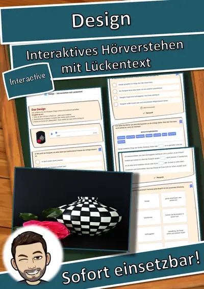
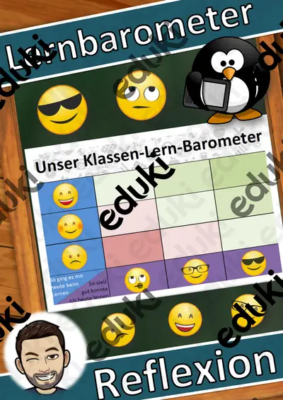

Sprechblasen zur Reflexion oder für eigene Arbeitsblätter (Cliparts Design)
KostenlosMaterial auf eduki ansehen
In diesem Material finden Sie 20 unterschiedliche Sprechblasen, die Sie als Reflexion für Ihre Schüler, also als Tafelmaterial, zur Gestaltung von Schaukästen, etc. nutzen können. Außerdem erhalten Sie zusätzlich alle Sprechblasen auch als Grafik. Diese können Sie nach belieben auf eigenen Arbeitsblättern für Ihre Klasse nutzen. Die Sprechblasen können in Word/Powerpoint, etc. einfach eingefügt und genutzt werden. Über eine kleinen Beitrag für meine Kaffeekasse freue ich mich sehr: :) https://www.paypal.com/cgi-bin/webscr?cmd=_s-xclick&hosted_button_id=VQNS7ZDMJ83WY&source=url Danke!
FachFachübergreifendes
Klasse–
SchulformMaterial ist unabhängig von Schultyp & Klassenstufen, z.B. Agenda für Elternabend
Materialartselbst erstellte Cliparts/Grafiken
Ähnliche Materialien

Design – Hörverstehen mit Lückentext (interaktiv)

Design Lückentext mit Wortspeicher Hörverstehen und Suchsel

Tafelmaterial Coronavirus - Coronavirus

Tafelmaterial Steinzeit

Tafelmaterial Ägypten

Lesespur: Das Bauhaus: Design für alle – Lesespurgeschichte mit Rätseln (Klasse 10)

Reflexion: Lernbarometer, Stimmungsbarometer